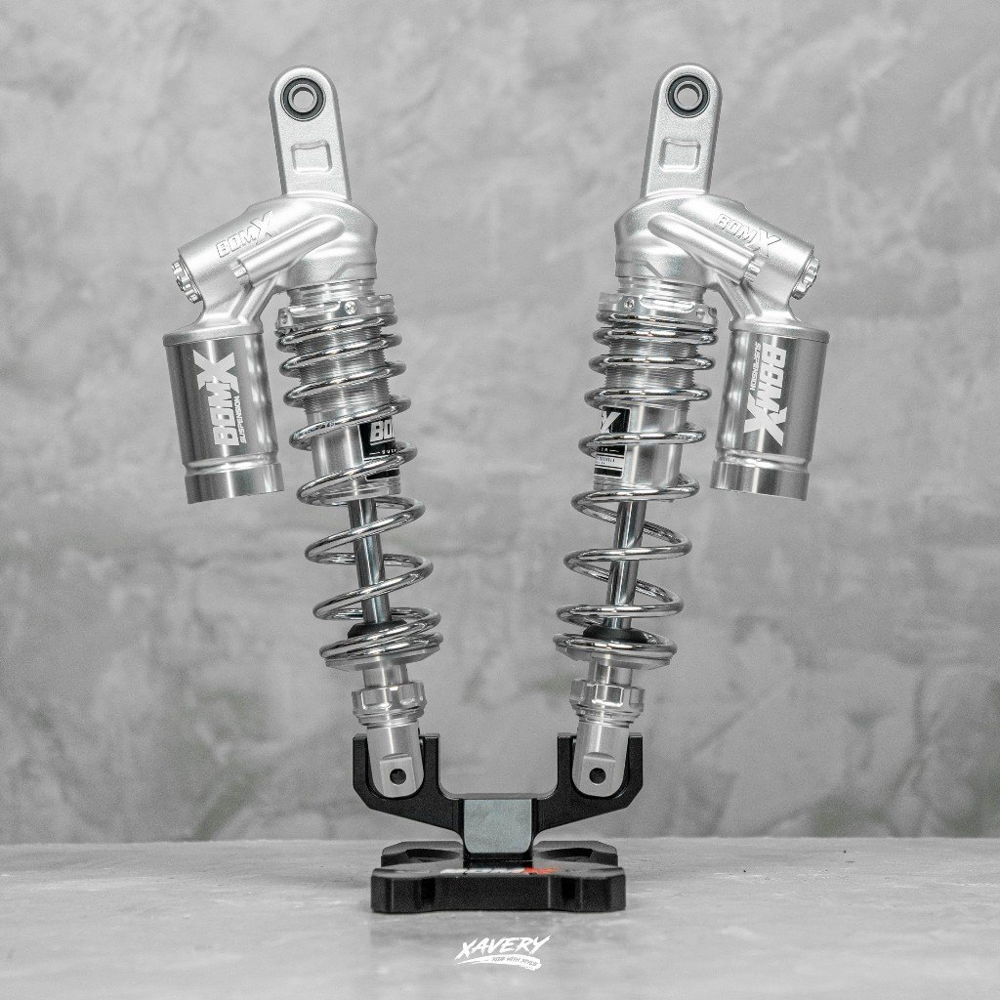

Bike parts · 3 October 2026
BOMX Pulse shock.
The shop title is BOMX Pulse adjustable shock absorber, U-type fork, in a single 330 millimetre length or a dual set at 305 and 335 millimetres. Buy the length that matches the bike from that Shopee listing.

The listing says the shock is adjustable and that colors are sold in combinations, including black, silver, and chrome. It separates a single shock at 330 millimetres from a dual set at 305 millimetres and 335 millimetres. A shock that is the wrong eye-to-eye length will not bolt up, and a longer shock changes ride height.
What to measure
- Eye to eye, in millimetres, on the shock that is on the bike now.
- Single or dual. A scooter with one rear shock is not the dual set.
- U-type fork mount. A different clevis will not share the bolt.
The listing does not name one motorcycle. Do not order from a color photo alone. If your measurement is not 305, 330, or 335 millimetres, ask the shop before checkout.
Check this before you buy
- You wrote down the length and whether the bike uses one shock or two.
- You picked the color code the listing prints, not a color from a different brand.
- You can support the bike before the old shock comes off. The rear will drop.
Kurbada does not set the preload and does not stock the shock. The button opens the shop.
More guides
RCB R1 brake caliper · REV exhaust pipe · Beast tubeless tire